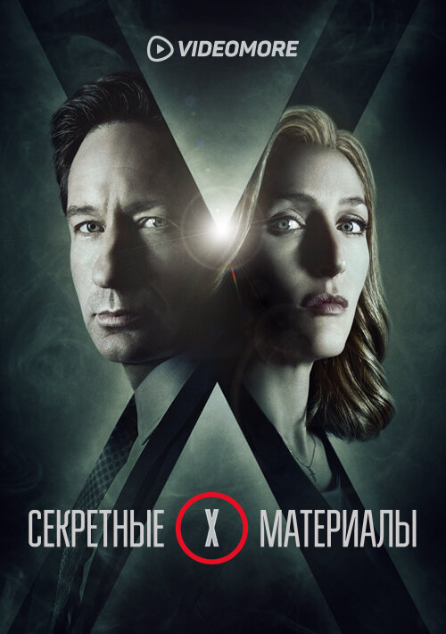

Школьный учитель химии Уолтер Уайт узнаёт, что болен раком лёгких. Учитывая сложное финансовое состояние дел семьи, а также перспективы, Уолтер решает заняться изготовлением метамфетамина. Для этого он привлекает своего бывшего ученика Джесси Пинкмана, когда-то исключённого из школы при активном содействии Уайта. Пинкман сам занимался варкой мета, но накануне, в ходе рейда УБН, он лишился подельника и лаборатории.
Школьный учитель химии Уолтер Уайт узнаёт, что болен раком лёгких. Учитывая сложное финансовое состояние дел семьи, а также перспективы, Уолтер решает заняться изготовлением метамфетамина. Для этого он привлекает своего бывшего ученика Джесси Пинкмана, когда-то исключённого из школы при активном содействии Уайта. Пинкман сам занимался варкой мета, но накануне, в ходе рейда УБН, он лишился подельника и лаборатории.
 Сериал рассказывает историю жизни семьи шерифа после того, как «зомби» - эпидемия апокалиптических масштабов захлестнула земной шар. Шериф Рик Граймс путешествует со своей семьей и небольшой группой выживших в поисках безопасного места для жизни. Но постоянный страх смерти каждый день приносит тяжелые потери, заставляя героев почувствовать глубины человеческой жестокости. Рик пытается спасти свою семью, и открывает для себя, что всепоглощающий страх тех, кто выжил, может быть опаснее бессмысленных мертвецов, бродящих по земле.
Сериал рассказывает историю жизни семьи шерифа после того, как «зомби» - эпидемия апокалиптических масштабов захлестнула земной шар. Шериф Рик Граймс путешествует со своей семьей и небольшой группой выживших в поисках безопасного места для жизни. Но постоянный страх смерти каждый день приносит тяжелые потери, заставляя героев почувствовать глубины человеческой жестокости. Рик пытается спасти свою семью, и открывает для себя, что всепоглощающий страх тех, кто выжил, может быть опаснее бессмысленных мертвецов, бродящих по земле.
 История о группе гиков, готовящих к запуску собственные стартапы в высокотехнологичном центре Сан-Франциско.
Главные герои сериала бесплатно проживают в доме местного миллионера, но взамен им придётся отдать по 10% прибыли от будущих проектов.
История о группе гиков, готовящих к запуску собственные стартапы в высокотехнологичном центре Сан-Франциско.
Главные герои сериала бесплатно проживают в доме местного миллионера, но взамен им придётся отдать по 10% прибыли от будущих проектов.

Агентам ФБР Дане Скалли и Фоксу Малдеру поручают работу над проектом «Секретные материалы». Это архив нераскрытых дел, связанных с паранормальными явлениями. Малдер верит в пришельцев и пытается убедить скептика Скалли, что не всё поддаётся разумному объяснению. Постепенно взаимное недоверие перерастает в дружбу и даже в более глубокое чувство.